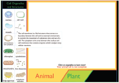
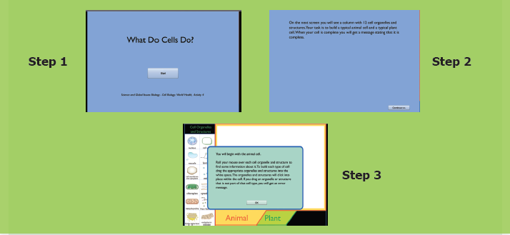

The Cell
Through this activity you will be able to understand the differences between Plant and Animal Cell, their organelles and their functions.

Step 1: Use the given URL in the browser. ‘What do Cells do? Page will open. Click the Start Button to begin the activity.
Step 2: Click continue to proceed to the activity, a column with cell organelles is given. Your task is to build a plant cell and animal cell. Roll the mouse over each organelle to learn about it.
Step 3: Use the mouse to drag the appropriate organelles to build the cell.
Step 4: After finishing the animal cell, continue the same process to finish the plant cell.

What do Cells do? URL:
http://sepuplhs.org/high/sgi/teachers/cell_sim.html
*Pictures are indicative only